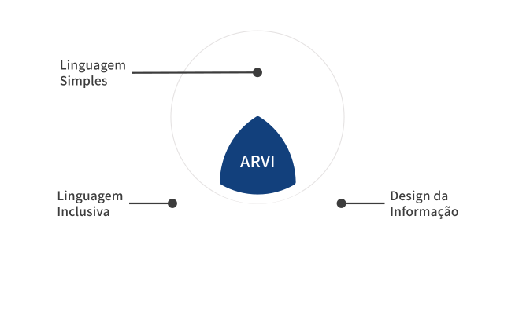

O que é a ferramenta ARVI?
A ARVI é uma ferramenta que ajuda você a avaliar materiais informativos de saúde. Ela foi criada tendo como base peças gráficas sobre PrEP e PEP: os remédios que previnem o HIV antes e depois de uma exposição.
A ARVI reúne três formas de olhar para o material:
- Linguagem Simples: o texto é fácil de encontrar, entender e usar.
- Design da Informação: a forma, as cores e a estrutura ajudam a pessoa a entender a informação.
- Linguagem Inclusiva: as palavras respeitam quem lê e não reforçam preconceito.
Por isso a ARVI não avalia só se o material está bem organizado ou bem escrito. A ferramenta avalia forma, linguagem, conteúdo e inclusão juntos.
